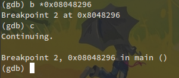
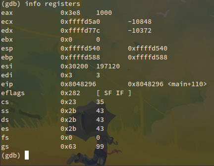

Siteme o kadar uzun süredir yazı girmiyorum ki artık kendisini unutma derecesine geldim. Bu şekilde olma sebebi yazacak şey bulamamak değil tam tersi o kadar çok yazacak konum olmasına rağmen bir türlü ilk ateşi yakamamam. Vize haftasının son bulması ve tam bu sırada SiberMeydan yarışmasına katılmamız beni bu yazıyı yazmaya itti. Ciddi anlamda blog yazmayı özlemişim diyebilirim.
Sibermeydan Tubitak'ın düzenlediği üniversite öğrencilerinin siber güvenlik konusunda birbirleriyle yarıştığı eğlenceli bir proje oldu. İlk aşaması geçtiğimiz perşembe ve cuma günleri gerçekleştirildi. İkinci aşamaya geçecek olan 10 takımda dün akşam belirlendi. İstanbula gidecek olan ekiplerden birisi de benim arkadaşlarım ile katıldığım OctoSec grubu oldu.
Yarışma konusundan bu kadar bahsettikten sonra gerçek konumuza dönebiliriz. Sibermeydan içerisinde yer alan tersine mühendislik sorularından bir tanesi üzerinden basit bir giriş yapmayı düşünüyorum.
Öncelikle soruyu anlayalım. Dizin altında derlenmiş bir dosya var. Bu dosyayı çalıştırdığınızda yetkisiz işlem yaptınız şeklinde hata alıyorsunuz. Kullanıcılar değişince, yetkiler değişince hata mesajının sadece hata kodları değişiyor. İşte amaç bu dosyayı istenildiği şekilde çalıştırmak ve çalışınca üreteceği değere ulaşmak.
Amacımızı anladıktan sonra uygulama hakkında biraz bilgi toplamaya başlayalım. İlk olarak bu uygulamanın hangi platform için derlendiği gibi temel bilgileri file aracı ile öğreniyoruz.
Uygulamamızın Linux 32 bit sistemler için derlendiği bilgisi elde ettik. Bundan sonra çalıştırılabilir dosya içerisinde yer alan metinleri çıkarabilen strings aracı ile içerisine ufak bir göz gezdiriyoruz. Bu çıktı biraz büyük olacaktır. Ancak tüm stringlere göz ucuyla da olsa bi bakmak çok faydalı oluyor. Ve gördüğümüz gibi bu uygulama upx ile sıkıştırılmış.
Şimdiki amacımız öncelikle bu dosyayı açmak ve daha sonra hakkında daha detaylı bilgiler öğrenmek. Upx kullanılarak sıkıştırılmış dosyaları upx -d komutu ile kolayca açabiliyoruz.
Artık uygulamamızı açtığımıza göre hakkında daha detaylı bilgiler öğrenmeye başlayabiliriz. Öncelikle içerisinde sembol varmı diye kontrol ediyoruz. Bunun için nm aracı kullanılabilir.
Bu komut sonrasında uzunca bir çıktı gelecektir. Sembollerin yanında yer alan T bu sembolun .text kod kısmında olduğunu, B ilk değer verilmemiş .data kısmında ve D ise ilk değer verilmiş .data kısmında yer aldığını söylüyor. Değişken isimleri, fonksiyon isimleri gibi detaylı verilere bu sayede ulaşabiliriz.
Şimdi de uygulamımızın çağırdığı sistem çağrılarını bir gözden geçirelim.
Burada yer alan getuid32() fonksiyonu aslında programın amacını açıkca belli etti ancak biz farketmemiş gibi işimize devam edelim.
Son olarakta uygulamamız dinamik olarak kullandığı kütüphaneler varmı diye kontrol ediyoruz.
Artık uygulamamız hakkında detaylı birçok bilgiye sahibiz. Şimdi de onu debug edip çalışma şekline müdahale edelim. Bunun için Linux üzerinde gdb gibi harika bir araca sahibiz. Hemen uygulamamızı gdb ile açıp ilk debug işlemlerimize başlayalım.
Uygulamamızı gdb ile açtıktan sonra main fonksiyonuna breakpoint koyalım. Bu sayede uygulama buraya kadar çalışacak ve biz daha sonra debug etmeye başlayacağız. Breakpoint koyduktan sonra uygulamayı r ile koşturalım.
Şimdi de uygulamamızı disassemble edip assembly kodlarına erişelim. Uygulama çalışma sırasında nerede olduğunu yan taraftaki ok ile öğrenebiliriz.
Bundan sonra kodumuzu detaylıca incelemeye başlıyoruz. En üstten itibaren takip ediyoruz. Ve uygulamanın en can alıcı noktasına ulaşıyoruz.
Gördüğünüz gibi 0x08048291 numaralı satırda getuid fonksiyonu call ile çağrılıyor. Daha sonraki satırda eax registerı içerisindeki değer 0x2098 değeri ile cmp ile karşılaştırılıyor. Artık herşey çok netleşti. Uygulama kullanıcın id'sinin 0x2098 16lık değerine eşit olup olmamasına göre işlem yapıyor. Yani biz yeni bir kullanıcı oluşturup id'sini decimal olarak 8344 yaparsak bu uygulama çalışır.
Bu tabi akla gelen ilk yol. Biz biraz daha kolayını yapalım. Tam karşılaştırma işleminin olduğu yere breakpoint koyalım. Ve uygulamanın koşmasına devam ettirelim.

Şimdi yapmamız gereken eax registeri içindeki değerimizi istenilen değere setlemek. Setleme işleminden sonra devam ettirdiğimizde uygulama istenildiği şekilde çalışması lazım. Önce ilk durumuna bakalım.

Şimdi registerımızı setleyelim.
Değerimizin değiştini gördünüz. Artık uygulamayı devam ettirelim ve if kısmının içerisini görelim.
Ve sonuca ulaştık.
Buradaki amacım tersine mühendislik hakkında detaylıca konuşmak değil, yarışma içerisinde bir cevaba Linux ve GNU araçları sayesinde nasıl kısa sürede ulaştığımı göstermektir. Yukarda anlattığım adımlara sırf yazı için eklemeler yaptım. Normalde direk olarak gdb ile uygulamayı debug etmek bazen en kolayı oluyor. Ancak diğer araçları da tanıtmak istedim. Bir başka yazımda da bu araçların detaylı kullanımlarını anlatmayı düşünüyorum.